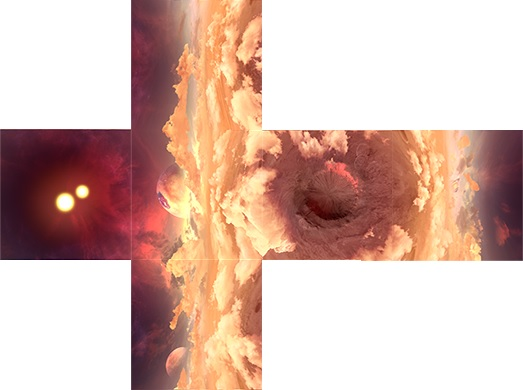

Skyboxes and backgrounds
Beginner Designer Programmer
Skyboxes are backgrounds that create the illusion of space and distance. Typical skybox backgrounds include skies, clouds, mountains, and other scenery. As skyboxes are prerendered, they require little GPU and CPU.
You can use cubemaps or 360° panoramic textures as skyboxes. You can also use them to light the scene.
Note
Currently, Stride doesn't support skydomes or local skyboxes.
Alternatively, you can display a 2D background, which is often useful for 2D games.
Cubemaps
A cubemap is a six-sided texture. When these textures are assembled in a cube around the scene, the cubemap simulates spacious 3D surroundings.

Currently, Game Studio can't convert image files to cubemaps (.dds files). Use another application to create a cubemap from separate image files, such as:
Create a cubemap in Game Studio
You can capture a cubemap from a position in your scene.
In the scene editor, position the camera at the point where you want to capture the cubemap. The direction the camera faces doesn't matter, only the position.
Typically, you should capture cubemaps at the center of your scene to create the best all-round view.
In the scene editor toolbar, open the Lighting options menu.

Under Cubemap, click Generate.
Browse to the location on disk you want to save the cubemap, specify a name, and click Save.
Tip
We recommend you save the cubemap in your project Resources folder. For more information, see Organize your files in version control.
Game Studio creates a cubemap .dds file in the location you specified.
360° panoramic textures
Instead of using a cubemap, you can use a 360° panoramic texture as a 3D background.
| 360° panorama | Appearance in game
|----------------|-------------
|  |
|  Image courtesy of Texturify
Image courtesy of Texturify
Note
Remember that post effects affect the appearance of your skybox. If it doesn't look how you expect, try changing your post effect settings.
Add a cubemap or 360° panoramic texture to the project
You add these like other color textures.
In the Asset View, click
 , select Textures > Color texture, and browse to the file.
, select Textures > Color texture, and browse to the file.Alternatively, drag and drop the file from Windows Explorer to the Asset View, then select Color texture.

Create a skybox
To create a skybox, add a cubemap or 360° panoramic texture to a background component.
Stride includes an entity with a background component in the project by default. Only one background can be active in a scene at a time. If there are multiple backgrounds, Stride only loads the first.
You can add background components to as many entities as you need. You might want to include more than one background, for example, if you want to switch skyboxes at runtime.
Add a background entity
In the Scene view, select the entity you want to add the component to.
This can be an empty entity. Its position in the scene doesn't matter.
In the Property Grid (on the right by default), click Add component and select Background.
Under Texture, select the cubemap or 360° panoramic texture you want to use in the skybox.

Use a skybox as a light source
You can use a skybox to light the scene. Stride analyzes the skybox texture and generates lighting using image-based lighting (Wikipedia). For more information, see Skybox lights.
Change the skybox at runtime
The following code changes the cubemap in a background:
public Texture cubemapTexture;
public void ChangeBackgroundParameters()
{
// Get the background component from an entity
var background = directionalLight.Get<BackgroundComponent>();
// Replace the existing background
background.Texture = cubemapTexture;
// Change the background intensity
background.Intensity = 1.5f;
}
Convert cubemaps to panoramas and vice versa
Various tools exist to convert a panoramas to cubemaps and vice versa, including:
Set a 2D background
Instead of using a 3D skybox, you can display the texture as a static background. This displays the texture as a flat image that stays static no matter how you move the camera. This is often useful for 2D games.
To do this, in the Background component properties, select 2D background.

If you enable this with a cubemap, Stride uses the first face of the cubemap as the background.
Use a video as a skybox
For details, see Videos - Use a video as a skybox.